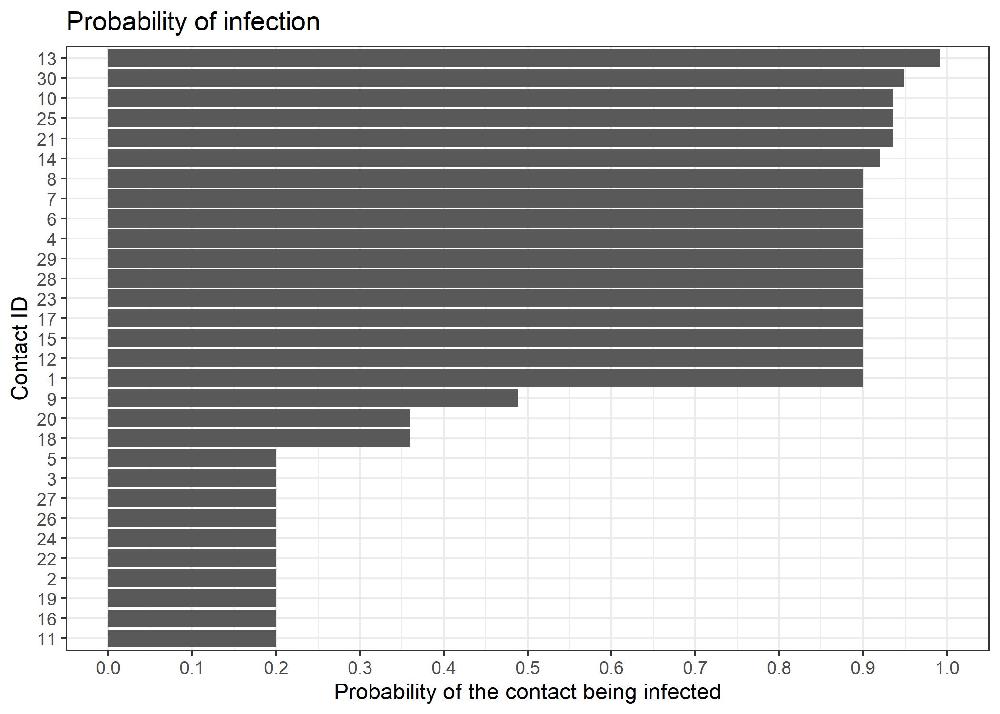
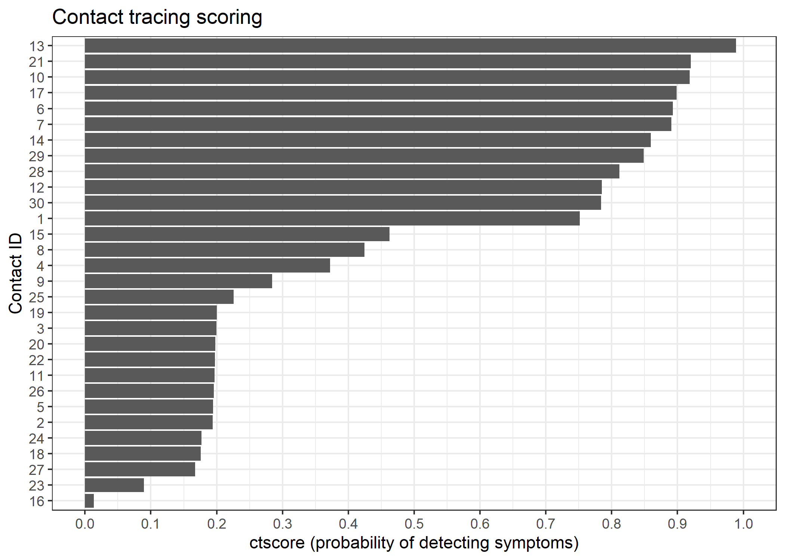
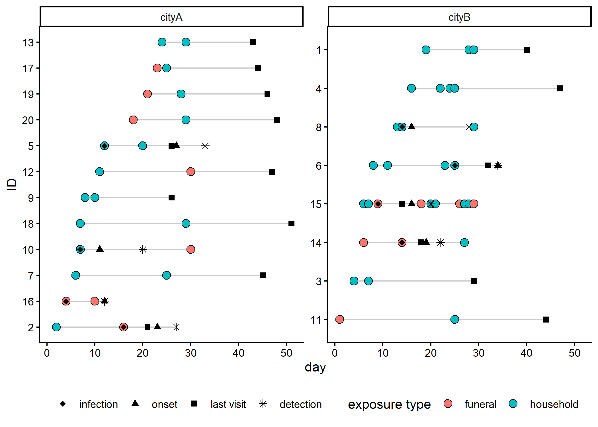

Worked example
Raw data
In the following, we read a toy dataset included in the package, which contains simulated contact tracing data for 30 contacts. Each contact has one or more exposures, some of which led to infection. Data are stored inside xlsx files distributed with the package, but in practice you would read your own data from csv or xlsx files.
library(ctscore)
library(rio)
library(tibble)
library(dplyr)
library(ggplot2)
## use the path to your own file in practice
linelist <- rio::import(system.file(
"toy_linelist.xlsx",
package = "ctscore"
)) |>
tibble()
linelist
#> # A tibble: 30 × 5
#> contact_id location last_visit_date infected onset_date
#> <dbl> <chr> <dbl> <lgl> <dbl>
#> 1 1 local_town NA TRUE 22
#> 2 2 local_town NA FALSE NA
#> 3 3 local_town NA TRUE 8
#> 4 4 hotspot NA TRUE 32
#> 5 5 hotspot 14 FALSE NA
#> 6 6 new_city NA TRUE 10
#> 7 7 local_town 10 TRUE 11
#> 8 8 new_city 26 TRUE 29
#> 9 9 local_town 26 TRUE 35
#> 10 10 new_city NA TRUE 11
#> # ℹ 20 more rows
exposures <- rio::import(
system.file("toy_exposures.xlsx", package = "ctscore")
) |>
tibble()
exposures
#> # A tibble: 46 × 3
#> contact_id date exposure_type
#> <dbl> <dbl> <chr>
#> 1 1 19 funeral
#> 2 2 13 household
#> 3 3 6 household
#> 4 4 25 funeral
#> 5 5 12 household
#> 6 6 9 funeral
#> 7 7 9 funeral
#> 8 8 24 funeral
#> 9 9 7 household
#> 10 9 17 household
#> # ℹ 36 more rowsPreparing the data: creating a ctdata object
A ctdata object is a list containing three data frames:
-
linelist: A data frame containing individual-level information, one row percontact_id. It contains the following columns:-
contact_id: a unique identifier for each contact (required) -
location: the location of the contact (optional) -
last_visit_date: the date of the last visit to the contact (optional) -
infected: a logical indicating whether the contact was infected (optional) -
onset_date: the date of symptom onset (optional)
-
-
exposures: A data frame containing exposure-level information, one row per exposure. It contains the following columns:-
contact_id: a unique identifier for each contact (required) -
date: the date of exposure, indicated as an integer since the first exposure; in practice, this could be actual dates in the format YYYY-MM-DD (required) -
exposure_type: the type of exposure (e.g. “household”, “funeral”) (required)
-
-
risk: A data frame containing the risk attached to each type of exposure, one row per exposure type. It contains the following columns:-
exposure_type: the type of exposure, matching those found inexposures -
infection_proba: the probability of infection for that type of exposure (derived from theinfection_probaargument)
-
Infection probabilities (argument infection_proba) can be estimated from previous contact tracing data, from the literature, or by expert opinion. Here, we assume that household exposures have a 20% probability of infection, while funeral exposures have a 90% probability of infection.
x <- make_ctdata(
linelist = linelist,
exposures = exposures,
infection_proba = list(household = 0.2, funeral = 0.9)
)
x
#> <ctdata>: 30 contact(s), 46 exposure(s), 2 exposure type(s)
#>
#> $linelist
#> # A tibble: 30 × 5
#> contact_id location last_visit_date infected onset_date
#> <chr> <chr> <dbl> <lgl> <dbl>
#> 1 1 local_town NA TRUE 22
#> 2 10 new_city NA TRUE 11
#> 3 11 new_city NA TRUE 12
#> 4 12 new_city NA FALSE NA
#> 5 13 hotspot 5 TRUE 14
#> 6 14 hotspot NA TRUE 20
#> 7 15 hotspot 27 FALSE NA
#> 8 16 hotspot NA FALSE NA
#> 9 17 hotspot NA TRUE 11
#> 10 18 local_town 28 FALSE NA
#> # ℹ 20 more rows
#>
#> $exposures
#> # A tibble: 46 × 3
#> contact_id date exposure_type
#> <chr> <dbl> <chr>
#> 1 1 19 funeral
#> 2 10 2 household
#> 3 10 5 household
#> 4 10 13 funeral
#> 5 11 11 household
#> 6 12 18 funeral
#> 7 13 1 funeral
#> 8 13 8 funeral
#> 9 13 28 household
#> 10 14 15 funeral
#> # ℹ 36 more rows
#>
#> $risk
#> # A tibble: 2 × 2
#> exposure_type infection_proba
#> <chr> <dbl>
#> 1 funeral 0.9
#> 2 household 0.2
class(x)
#> [1] "ctdata"Smaller datasets can be visualised using plot():
plot(x)
Calculating probabilities of infection
The probabilities that a given contact has been infected given their exposures can be calculated using p_infected():
p_inf <- p_infected(x)
p_inf
#> 1 10 11 12 13 14 15 16 17 18 19 2
#> 0.9000 0.9360 0.2000 0.9000 0.9920 0.9200 0.9000 0.2000 0.9000 0.3600 0.2000 0.2000
#> 20 21 22 23 24 25 26 27 28 29 3 30
#> 0.3600 0.9360 0.2000 0.9000 0.2000 0.9360 0.2000 0.2000 0.9000 0.9000 0.2000 0.9488
#> 4 5 6 7 8 9
#> 0.9000 0.2000 0.9000 0.9000 0.9000 0.4880This information can be used, for instance, for informing post-exposure prophylaxis, to prioritise individuals at the highest risk of infection. This data can be attached to the dataset’s linelist using add_p_infected():
x <- add_p_infected(x, p_inf)
x
#> <ctdata>: 30 contact(s), 46 exposure(s), 2 exposure type(s)
#>
#> $linelist
#> # A tibble: 30 × 6
#> contact_id location last_visit_date infected onset_date p_infected
#> <chr> <chr> <dbl> <lgl> <dbl> <dbl>
#> 1 1 local_town NA TRUE 22 0.9
#> 2 10 new_city NA TRUE 11 0.936
#> 3 11 new_city NA TRUE 12 0.2
#> 4 12 new_city NA FALSE NA 0.9
#> 5 13 hotspot 5 TRUE 14 0.992
#> 6 14 hotspot NA TRUE 20 0.92
#> 7 15 hotspot 27 FALSE NA 0.9
#> 8 16 hotspot NA FALSE NA 0.2
#> 9 17 hotspot NA TRUE 11 0.9
#> 10 18 local_town 28 FALSE NA 0.36
#> # ℹ 20 more rows
#>
#> $exposures
#> # A tibble: 46 × 3
#> contact_id date exposure_type
#> <chr> <dbl> <chr>
#> 1 1 19 funeral
#> 2 10 2 household
#> 3 10 5 household
#> 4 10 13 funeral
#> 5 11 11 household
#> 6 12 18 funeral
#> 7 13 1 funeral
#> 8 13 8 funeral
#> 9 13 28 household
#> 10 14 15 funeral
#> # ℹ 36 more rows
#>
#> $risk
#> # A tibble: 2 × 2
#> exposure_type infection_proba
#> <chr> <dbl>
#> 1 funeral 0.9
#> 2 household 0.2We can visualise the result:
ggplot(x$linelist, aes(x = p_infected, y = reorder(contact_id, p_infected))) +
geom_col() +
scale_x_continuous(n.breaks = 10, limits = c(0,1)) +
theme_bw() +
labs(
x = "Probability of the contact being infected",
y = "Contact ID",
title = "Probability of infection"
)
Scoring with ctscore()
ctscore computes, for each contact, the probability that a visit today will lead to detecting a new case.
First, we need to specify incubation period distribution, which can be provided either as a vector of probabilities (giving p(0 day), p(1 day), p(2 days) …) or as a distcrete object as returned by distcrete::distcrete(). Here, we generate a dummy incubation time distribution as a discretized Gamma:
incub <- distcrete::distcrete(
"gamma",
interval = 1,
shape = 3.5,
scale = 2.5,
w = 0
)
plot(
incub$d(0:30),
type = "h",
lwd = 6,
lend = 1,
xlab = "Days since infection",
ylab = "Probability of symptom onset",
main = "Incubation time distribution",
col = 2
)
We can now calculate the score using the ctscore() function, the current date is day 31 (again, this could be a real date in practice, in YYYY-MM-DD format):
score <- ctscore(x, incub, current_date = 31)
score
#> 1 10 11 12 13 14 15
#> 0.75160666 0.91833598 0.19675645 0.78488929 0.98886504 0.85942526 0.46260342
#> 16 17 18 19 2 20 21
#> 0.01314619 0.89862699 0.17565593 0.20034744 0.19379145 0.19806789 0.91994096
#> 22 23 24 25 26 27 28
#> 0.19762332 0.08951862 0.17677369 0.22575593 0.19547637 0.16702370 0.81157143
#> 29 3 30 4 5 6 7
#> 0.84863053 0.19969489 0.78407698 0.37251628 0.19462428 0.89302170 0.89053700
#> 8 9
#> 0.42430699 0.28448157For prioritising individuals, add_ctscore() attaches the scores onto the linelist of the ctdata object:
## ctdata with a `score` column in the linelist
xs <- add_ctscore(x, score)We can use a simple plot to visualise the scores for each contact, which can be useful for prioritising visits:
xs$linelist |>
ggplot(aes(x = score, y = reorder(contact_id, score))) +
geom_col() +
scale_x_continuous(n.breaks = 10, limits = c(0,1)) +
theme_bw() +
labs(
x = "ctscore (probability of detecting symptoms)",
y = "Contact ID",
title = "Contact tracing scoring"
)
We can use as_tibble() to flatten the ctdata object into a single data frame, joining the risk table onto each exposure. The argument by_contact indicates whether to return one row per contact (TRUE) or one row per exposure (FALSE, default):
as_tibble(xs) |>
slice_max(score, n = 6)
#> # A tibble: 6 × 10
#> contact_id date exposure_type infection_proba location last_visit_date infected
#> <chr> <dbl> <chr> <dbl> <chr> <dbl> <lgl>
#> 1 13 1 funeral 0.9 hotspot 5 TRUE
#> 2 13 8 funeral 0.9 hotspot 5 TRUE
#> 3 13 28 household 0.2 hotspot 5 TRUE
#> 4 21 1 funeral 0.9 new_city NA TRUE
#> 5 21 17 household 0.2 new_city NA TRUE
#> 6 21 30 household 0.2 new_city NA TRUE
#> # ℹ 3 more variables: onset_date <dbl>, p_infected <dbl>, score <dbl>The contact (ID 13) has the highest score because they had multiple exposures, including several funeral exposures, and were last seen 26 days ago (on day 5, current day is 31), so there was ample time for symptoms to have appeared since then. In fact, the linelist recorded that this contact was infected and developed symptoms on day 14.
as_tibble(xs) |>
slice_min(score, n = 4)
#> # A tibble: 5 × 10
#> contact_id date exposure_type infection_proba location last_visit_date infected
#> <chr> <dbl> <chr> <dbl> <chr> <dbl> <lgl>
#> 1 16 29 household 0.2 hotspot NA FALSE
#> 2 23 27 funeral 0.9 local_town 30 FALSE
#> 3 27 19 household 0.2 local_town NA TRUE
#> 4 18 10 household 0.2 local_town 28 FALSE
#> 5 18 24 household 0.2 local_town 28 FALSE
#> # ℹ 3 more variables: onset_date <dbl>, p_infected <dbl>, score <dbl>The lowest scoring contact had a single ‘weak’ exposure only 2 days ago, so that it is unlikely that the individual has been infected, and if they have been, it is unlikely that they have developed symptoms yet.
Simulating contact tracing data
We can simulate contact tracing data using the sim_ctdata() function. This function generates a synthetic dataset of contacts and exposures, which can be useful for testing different follow-up strategies and evaluating the performance of the scoring system. See ?sim_ctdata for details on the arguments.
set.seed(123)
sim <- sim_ctdata(
n_contacts = 20,
duration = 30,
incub = incub$r(100),
locations = list(cityA = 0.7, cityB = 0.3),
n_exposures = list(cityA = 2, cityB = c(2, 2, 3, 4, 5, 10)),
infection_proba = list(household = 0.2, funeral = 0.4),
type_proba = list(household = 0.7, funeral = 0.3)
)
sim
#> <ctdata>: 20 contact(s), 55 exposure(s), 2 exposure type(s)
#>
#> $linelist
#> # A tibble: 20 × 6
#> contact_id location last_visit_date infected onset_date infection_date
#> <chr> <chr> <dbl> <lgl> <dbl> <dbl>
#> 1 1 cityB NA FALSE NA NA
#> 2 10 cityA NA TRUE 11 7
#> 3 11 cityB NA FALSE NA NA
#> 4 12 cityA NA FALSE NA NA
#> 5 13 cityA NA FALSE NA NA
#> 6 14 cityB NA TRUE 19 14
#> 7 15 cityB NA TRUE 16 9
#> 8 16 cityA NA TRUE 12 4
#> 9 17 cityA NA FALSE NA NA
#> 10 18 cityA NA FALSE NA NA
#> 11 19 cityA NA FALSE NA NA
#> 12 2 cityA NA TRUE 23 16
#> 13 20 cityA NA FALSE NA NA
#> 14 3 cityB NA FALSE NA NA
#> 15 4 cityB NA FALSE NA NA
#> 16 5 cityA NA TRUE 27 12
#> 17 6 cityB NA TRUE 34 25
#> 18 7 cityA NA FALSE NA NA
#> 19 8 cityB NA TRUE 16 14
#> 20 9 cityA NA FALSE NA NA
#>
#> $exposures
#> # A tibble: 55 × 3
#> contact_id date exposure_type
#> <chr> <int> <chr>
#> 1 1 19 household
#> 2 1 28 household
#> 3 1 29 household
#> 4 10 7 household
#> 5 10 30 funeral
#> 6 11 1 funeral
#> 7 11 25 household
#> 8 12 11 household
#> 9 12 30 funeral
#> 10 13 24 household
#> # ℹ 45 more rows
#>
#> $risk
#> # A tibble: 2 × 2
#> exposure_type infection_proba
#> <chr> <dbl>
#> 1 funeral 0.4
#> 2 household 0.2last_visit_date is empty as we have not yet simulated a follow-up strategy. We can simulate a follow-up strategy using the sim_followup() function.
f <- sim |>
sim_followup(
time = 30,
delay = 5,
duration = incub$q(0.99),
coverage = 0.2,
strategy = "random"
)
f |> as_tibble(by_contact = TRUE)
#> # A tibble: 20 × 8
#> contact_id location last_visit_date infected onset_date infection_date
#> <chr> <chr> <dbl> <lgl> <dbl> <dbl>
#> 1 1 cityB 40 FALSE NA NA
#> 2 10 cityA NA TRUE 11 7
#> 3 11 cityB 44 FALSE NA NA
#> 4 12 cityA 47 FALSE NA NA
#> 5 13 cityA 43 FALSE NA NA
#> 6 14 cityB 18 TRUE 19 14
#> 7 15 cityB 14 TRUE 16 9
#> 8 16 cityA NA TRUE 12 4
#> 9 17 cityA 44 FALSE NA NA
#> 10 18 cityA 51 FALSE NA NA
#> 11 19 cityA 46 FALSE NA NA
#> 12 2 cityA 21 TRUE 23 16
#> 13 20 cityA 48 FALSE NA NA
#> 14 3 cityB 29 FALSE NA NA
#> 15 4 cityB 47 FALSE NA NA
#> 16 5 cityA 26 TRUE 27 12
#> 17 6 cityB 32 TRUE 34 25
#> 18 7 cityA 45 FALSE NA NA
#> 19 8 cityB NA TRUE 16 14
#> 20 9 cityA 26 FALSE NA NA
#> # ℹ 2 more variables: detection_date <dbl>, exposures <list>
plot(f) +
facet_wrap(~location, scales = "free_y")